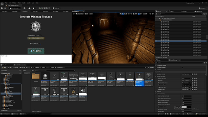

Gerador de Minimapa com Processamento Automático de Quadrantes Minimap Generator with Automated Quadrant Processing
Ferramenta de captura offline no Editor e sistema de UI para minimapas de alta performance em dungeons procedurais. Offline Editor capture tool and UI framework for high-performance minimaps in procedural dungeons.
Como Funciona & Lógica da Arquitetura How It Works & Architectural Logic
1. Pipeline de Captura com "Um Clique" (Artist-Friendly Workflow) 1. One-Click Capture Pipeline (Artist-Friendly Workflow)

Sempre que os Level Artists alteram o visual de um quadrante, eles acionam a ferramenta diretamente no Editor com apenas um clique. A ferramenta se encarrega de ler o conjunto de salas, isolar a geometria necessária e posicionar a câmera ortográfica na altura e ângulo corretos para renderizar a imagem estática top-down. Whenever Level Artists update quadrant visuals, they trigger the tool directly in the Editor with a single click. The tool isolates necessary geometry and aligns an orthographic camera at the exact height and angle to render static top-down captures.
2. Isolamento de Quadrantes no Ponto Origem (0,0,0) 2. Quadrant Isolation at Origin (0,0,0)
Como todas as salas residem nas mesmas coordenadas bases no Editor para alimentação do sistema procedural, a ferramenta ativa e desativa a visibilidade dos blocos individualmente para evitar sobreposição de geometria durante o processo de bake, exportando cada imagem devidamente rotulada e otimizada. Because all room tiles share base coordinates in the Editor for procedural generation, the tool toggles individual block visibility to avoid geometry overlap during baking, exporting cleanly labeled and optimized renders.
3. Injeção de Atores Dinâmicos em Tempo de Execução 3. Dynamic Actor Injection at Runtime
As imagens estáticas geradas servem apenas como o fundo do minimapa. Atores em movimento (jogadores, IAs e Itens) são registrados dinamicamente via código e desenhados como widgets e ícones sobre a imagem no HUD, calculando suas posições finais no mapa procedural montado pelo Dungeon Generator. Static renders serve strictly as minimap background tiles. Moving actors (players, AI, items) are registered via code and rendered as dynamic HUD widgets, projecting their relative positions on the procedurally generated map layout.
4. Gerenciamento Eficiente de Memória e Processamento 4. Efficient Memory & Processing Management
Como todas as imagens são estáticas, a engine não precisa ficar capturando imagens em realtime; todos os quadrantes têm o seu posicionamento pré-definido em uma Widget, e a única coisa que se move é a posição do player em relação aos quadrantes estáticos. Since background images are static, the engine avoids runtime scene capture passes. Quadrants hold pre-calculated layout transforms within UI widgets, where only player/entity coordinates update dynamically.
Destaques de Produção & Otimização Production & Optimization Highlights
- Automação Total de Arte: Full Art Automation: Elimina a necessidade de organizar manualmente os blocos no espaço do Editor ou desenhar mapas em softwares externos (como Photoshop) a cada alteração de design. Eliminates manual block arrangement or external 2D map painting (e.g., Photoshop) upon design changes.
- Zero Impacto de Renderização Dinâmica: Zero Runtime Render Overhead: Ao utilizar fotos estáticas em vez de componentes de captura de cena em tempo real (Scene Capture 2D), a ferramenta economiza passagens pesadas na GPU, mantendo a taxa de quadros (FPS) estável. By replacing real-time Scene Capture 2D components with static textures, GPU passes are significantly reduced, maintaining stable frame rates.
- Integração Perfeita com Sistemas Procedurais: Seamless Procedural Integration: Conecta o fluxo de criação de conteúdo estático do Editor com a lógica de montagem procedural e replicação multiplayer do jogo em tempo de execução. Bridges static Editor content authoring directly with runtime procedural assembly and multiplayer replication.